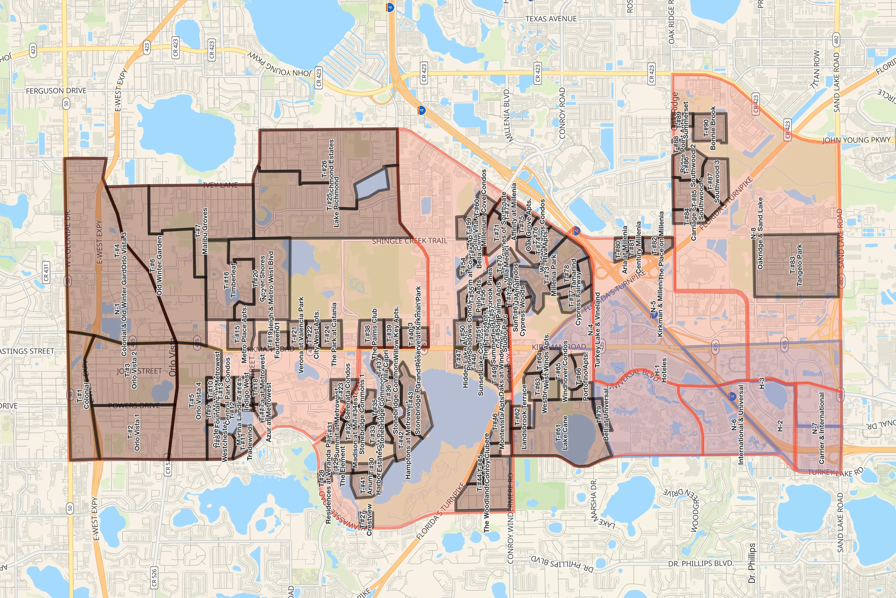

Yadira Pagan
Yadira Pagan
Home
Precursorado
Interesados
Registros
Territorios
Emergencia
Recursos
Instalación en Windows
Instalacion en Androide
Instalacion en iPhone

Acsede a los territorios
LIMITES DEL TERRITORIO
Gracias por aprovechar este medio digital de comunicación.
 LIMITES DEL TERRITORIO
LIMITES DEL TERRITORIO

 LIMITES DEL TERRITORIO
LIMITES DEL TERRITORIO